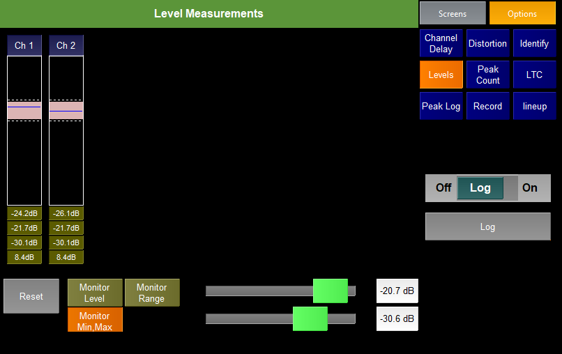

The Levels test plugin shows the level range of the incoming audio. It is useful for testing for silence or glitches on lines.
There is a column for each channel of incoming audio. These columns show
Pressing the Reset button will clear the meters and labels.
There are 3 monitor options
Monitor Level
Logs any change in the audio level. Useful for when you have solid tone (or silence) and want to capture any changes
Monitor Range
Logs whether the range of audio (difference between quietest sample and loudest sample) exceeds a set value. This can be set from the slide
Monitor Min,Max
Logs whenever the level of the audio is quieter the a user defined min level or louder than a user defined max level.